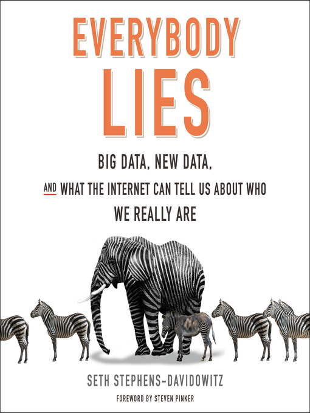

Everybody Lies, by Stephens-Davidowitz
Sunday March 14, 2021
I finally read my copy of this book, which is a final form of the author's collected research using "non-traditional" data, chiefly Google search data. The contribution of racism to Trump's election is a headline claim. I don't know that I'm as optimistic as the author that these techniques all yield uniformly stronger claims than "conventional" research.

"As if the tradeoff between tractability and richness weren't bad enough, scientists of human nature are vexed by the Law of Small Numbers–Amos Tversky and Daniel Kahneman's name for the fallacy of thinking that the traits of a population will be reflected in any sample, no matter how small." (page x, in the foreword by Steven Pinker)
"The true divide [of racism in the US], Google search data suggested, was not South versus North; it was East versus West. You don't get this sort of thing much west of the Mississippi." (pages 7-8)
"I am now convinced that Google searches are the most important dataset ever collected on the human psyche." (page 14)
"At Google, major decisions are based on only a tiny sampling of all their data." (page 21)
This is citing Hal Varian's Big Data: New Tricks for Econometrics.
"Good data science is less complicated than people think. The best data science is, in fact, surprisingly intuitive." (page 26)
"If you can't understand a study, the problem is probably with the study, not with you." (page 27)
- "Offering up new types of data is the first power of Big Data."
- "Providing honest data is the second power of Big Data."
- "Allowing us to zoom in on small subsets of people is the third power of Big Data."
- "Allowing us to do many causal experiments is the fourth power of Big Data." (pages 53-54)
On page 57 he mentions "Google Correlate," which seems neat ("Google Trends in reverse") and was publicly available from 2011 to 2019.
"The Big Data revolution is less about collecting more and more data. It is about collecting the right data." (page 62)
"First, and perhaps most important, if you are going to try to use new data to revolutionize a field, it is best to go into a field where old methods are lousy."
He's going through a sort of "Moneyball for X" survey of people:
- Horse racing: Jeff Seder
- Wine: Orley Ashenfelter
"The second lesson is that, when trying to make predictions, you needn't worry too much about why your models work."
"The final lesson to be learned from Seder's successful attempt to predict a potential Triple Crown winner is that you have to be open and flexible in determining what counts as data." (pages 71-74)
On page 91, he references a study that provides quantitative evidence for Vonnegut's Shapes of Stories.
""About one-third of the time, people lie in real life," he suggests. "The habits carry over to surveys."" (page 107, quoting Roger Tourangeau)
"Another reason for lying is simply to mess with surveys. This is a huge problem for any research regarding teenagers, fundamentally complicating our ability to understand this age group. Researchers originally found a correlation between a teenager's being adopted and a variety of negative behaviors, such as using drugs, drinking alcohol, and skipping school. In subsequent research, they found this correlation was entirely explained by the 19 percent of self-reported adopted teenagers who weren't actually adopted. Follow-up research has found that a meaningful percent of teenagers tell surveys they are more than seven feet tall, weigh more than four hundred pounds, or have three children. One survey found 99 percent of students who reported having an artificial limb to academic researchers were kidding." (page 108)
"He has always known he was attracted to men, he says, but thought that this was universal and something that all men just hid." (page 119)
This kind of thing is fascinating to me–private conspiracy theories that are self-protecting and secretly mislead those who form them. I imagine that many racist people, "proud boys," etc. believe that most people agree with them but hide their belief. See also expressions like "He's saying what we're all thinking," which is a statement that is difficult to verify.
"One thing that does not seem to matter
Around page 144, he's talking about how the internet is less segregated than you might think, in terms of people of all political persuasions reading the most popular news sites and so on. He points out also that "a surprising amount of the information people get on Facebook comes from people with opposing views." This makes me wonder how much the perception/reality of increased polarization is caused by more communication and exposure to different views. If I never hear about my aunt's crazy beliefs, I'm less likely to get upset about them and feel like I need to advocate against them. Maybe hearing about anti-racism makes some people more racist? Hmm.
"I think it's safe to say that the Great Recession did make child abuse worse, although the traditional measures did not show it." (page 147)
"We can't blindly trust government data. The government may tell us that child abuse or abortion has fallen and politicians may celebrate this achievement. But the results we think we're seeing may be an artifact of flaws in the methods of collection. The truth may be different–and sometimes, far darker." (pages 149-150)
This is not a critique that is specific to government data...
"Digital truth serum has revealed an abiding interest in judging people based on their looks; the continued existence of millions of closeted gay men; a meaningful percentage of women fantasizing about rape; widespread animus against African-Americans; a hidden child abuse and self-induced abortion crisis; and an outbreak of violent Islamophobic rage that only got worse when the president appealed for tolerance." (page 158)
"First, there can be comfort in knowing that you are not alone in your insecurities and embarrassing behavior."
"The second benefit of digital truth serum is that it alerts us to people who are suffering."
"The final–and, I think, most powerful–value in this digital truth serum is indeed its ability to lead us from problems to solutions." (pages 158-162)
"Recall that Chetty's team was trying to figure out what areas are good at allowing people to reach the upper middle class. My study was trying to figure out what areas are good at allowing people to reach fame. The results are strikingly different." (page 184)
This is sort of an interesting look at success for the masses versus success for the few, or at least at different levels/types of "success"... A possible hypothesis might be that the two should go together (more general success, more peak success) but that doesn't seem to be the case. The ideas of success may be too different?
"On a given day in some schools in rural India, more than 40 percent of teachers are absent." (page 209)
That's referencing Incentives Work: Getting Teachers to Come to School, which has this abstract:
"We use a randomized experiment and a structural model to test whether monitoring and financial incentives can reduce teacher absence and increase learning in India. In treatment schools, teachers’ attendance was monitored daily using cameras, and their salaries were made a nonlinear function of attendance. Teacher absenteeism in the treatment group fell by 21 percentage points relative to the control group, and the children’s test scores increased by 0.17 standard deviations. We estimate a structural dynamic labor supply model and find that teachers respond strongly to financial incentives. Our model is used to compute cost-minimizing compensation policies."
"Many economists previously leaned toward the view that leaders largely were impotent figureheads pushed around by external forces. Not so, according to Jones and Olken's analysis of nature's experiment." (page 228)
That's referencing Hit or Miss? The Effect of Assassinations on Institutions and War, which has this abstract:
"Assassinations are a persistent feature of the political landscape. Using a new dataset of assassination attempts on all world leaders from 1875 to 2004, we exploit inherent randomness in the success or failure of assassination attempts to identify the effects of assassination. We find that, on average, successful assassinations of autocrats produce sustained moves toward democracy. We also find that assassinations affect the intensity of small-scale conflicts. The results document a contemporary source of institutional change, inform theories of conflict, and show that small sources of randomness can have a pronounced effect on history."
Kind of an interesting analysis for the great man theory...
Some discussion around page 238 of the (non-)benefit of going to Harvard etc... It's more useful to be the kind of person who could go to Harvard (get in, etc.) - the perceived incremental benefit of going to Harvard vs. some other school may not be real.
"Generally, if someone tells you he will pay you back, he will not pay you back." (page 259)
This is about people writing on microfinance sites. Sounds about right; interesting to see quantitative support for this kind of thing.
"social science is becoming a real science."
He says this is the "big point" of his book...
Strong praise for Jawbone on page 277, which turned out to be bad timing as the company went under the year the book came out (2017)...
On page 283 there's a reference to Ellenberg's Hawking Index, which was amusing to me because I've enjoyed following Ellenberg a little bit since reading his How Not to Be Wrong.